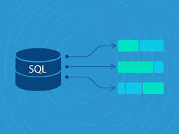

Featured Projects
Supply Chain Demand Planning Dashboard
End-to-end Power BI dashboard with Forecast vs Actual trends, Regional Performance, Inventory levels and Supplier analysis using DAX and Time Intelligence.

Retail Sales Analytics Using SQL
Advanced SQL analysis using CTEs, Window Functions, Ranking, Customer Segmentation and Pareto Analysis to identify top customers and business trends.
Coffee Sales Analytics Dashboard
Interactive Excel dashboard using Pivot Tables, Pivot Charts and Slicers to monitor sales performance, customer behaviour and product trends.

Customer Sales Analytics Using Python
Business KPI analysis, customer segmentation and sales analytics on 9,000+ transactions using Python, Pandas and NumPy.